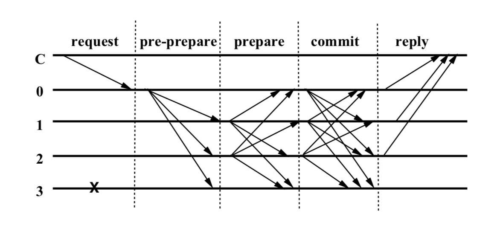
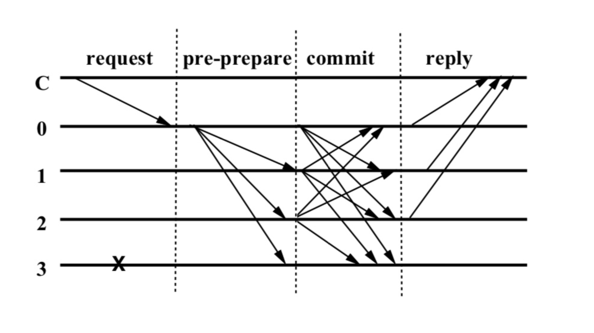

PBFT 为什么需要进行两次投票，第二次投票的作用是什么？这个问题困扰我很久。
从这个角度想，第二次投票在什么情况下是发挥作用的？在第二次投票的结果和第一次不一致的情况下，才是发挥作用的。如果第二次投票的结果和第一次严格一致，那当然没有必要进行第二次投票。
那在什么情况下，第二次投票的结果会和第一次不一样？只有当恶意节点存在并且刻意在第二次投票阶段投出不同的票，两次投票的结果才会不一样。
这是传统 PBFT 的常规操作流程图，其中节点 3 是错误节点或者恶意节点，从始至终没有响应：
这是去掉 prepare 阶段，只保留一次投票过程的流程图，其中节点 3 仍然是错误节点，没有响应：
关键在于，在这个场景中，节点 0、1、2 都是诚实节点，绝不可能恶意投票或者不投票，那么 commit 阶段的结果一定是和 prepare 的结果一致的，所以即使去掉 prepare 阶段，系统最终也会达成一致。
节点 3 一直都是恶意节点，如果在 commit 阶段，0、1、2 中的某个节点投出了和 prepare 不一致的票，整个系统就存在超过 1 个恶意节点，超出了容错能力。
要证明第二次投票是必要的，等同于说明如果没有第二次投票，系统将会无法正常运转。
逻辑上，即使说第二次投票有各种各样的好处，通过冗余来增加系统的容错能力、能够及时发现错误并且快速调整到一致的状态等，也不能说明第二次投票是非要不可的。比如这个 Why is the commit phase in PBFT necessary? 中的高赞回答，说了很多但只是正向解释了 commit 阶段的设计和作用。
我目前看到比较靠谱的一个解释在这里：PBFT: Why cant the replicas perform the request after 2/3 have prepared? why do we need commit phase?
其中提到如果没有 commit 阶段，当 view change 的时候，节点将无法保证请求执行的顺序。
我觉得 StackOverFlow 中的描述和高赞回答提到的论文含义还是有出入的。高赞回答的意思是，节点的 execute 因为缺少 commit 阶段而不一致，有的快有的慢。但即使有两轮投票，节点也可能在 commit 阶段之后 execute 之前发生故障，导致执行上的差异，所以这种故障还不是关键场景。
更加合理的场景是论文 Practical Byzantine Fault Tolerance and Proactive Recovery 中提到的，view change 发生的时候，不同的请求使用了相同的序列号，被打包进不同的 view 中。（这句话很凌乱）
Replicas may collect prepared certificates in different views with the same sequence number and different requests. The commit phase solves this problem as follows.
这个场景基于只投票一次的流程，也就是没有 prepare 阶段的流程。
视图 V1
R1: --
R2: P --> 执行 P
R3: P --> 执行 P
R4: P --> 执行 P
视图切换到 V2
R1: --
P' --> 执行 P'
R2: P --> 执行 P
P' --> 执行 P'
R3: P --> 执行 P
P' --> 执行 P'
R4: P --> 执行 P
P' --> 执行 P'
假设提议 P 和 P’ 是对相同账户余额的操作：
在视图 V1 和 V2 中的操作顺序和结果如下：
视图 V1
R1: 账户 A 余额 = 100 (未执行 P)
R2: 账户 A 余额 = 110 (执行 P)
R3: 账户 A 余额 = 110 (执行 P)
R4: 账户 A 余额 = 110 (执行 P)
视图 V2
R1: 账户 A 余额 = 100 (未执行 P) --> 执行 P' --> 账户 A 余额 = 95
R2: 账户 A 余额 = 110 (执行 P) --> 执行 P' --> 账户 A 余额 = 105
R3: 账户 A 余额 = 110 (执行 P) --> 执行 P' --> 账户 A 余额 = 105
R4: 账户 A 余额 = 110 (执行 P) --> 执行 P' --> 账户 A 余额 = 105
再来重复一下这句话，不同的请求（R2）使用了相同的序列号（R1 认为是 P），被打包进不同的 view （P’）中。相同的序列号应该是指执行的时序，就是当前时间点轮到哪个请求执行了。
在上面这个场景中，确实由于 A 节点故障导致最终状态出现了不一致。
两次投票的流程又是如何解决上述场景中的问题？
是不是注意到，第 2 条存在一点不公平？
两次投票的场景下，A 节点可以根据 commit 结果再次尝试执行 P。
单词投票的场景下，A 节点并没有根据 commit 的结果再次尝试执行 P，而是直接执行了 P’。
那么其实两次投票并没有完全避免在 execute 之前节点故障导致的状态不一致，仅仅只是通过增加一次通讯的形式，来反复确认其他节点的状态和自己预期是一致的，减少状态不一致的风险。
两次投票把发现故障的时间提前了，如果节点 A 没有在 commit 阶段发出投票，其他节点就知道 A 节点故障了，而不是等到自己已经 execute 了，才发现 A 没有 execute。多一次确认多一份保障，减少系统 execute 后回滚的成本，尽可能在 execute 之前就商量好。两次投票最大的作用应该也就这样了。
总的来说，第二次投票始终都没有体现出必须存在的意义，而只是带来了一些好处，加强了系统的安全性。这个问题可能类似于，TCP 为什么需要 3 次握手才能建立连接？2 次不行吗？估计 1 次也行，只是会引起一些麻烦，3 次确认足够保险。
为什么 PBFT 需要反复确认，尽量避免 execute 之后的状态不一致呢？也许任何系统的回滚都是一件非常慎重的事情，所以不惜增加 execute 之前的沟通成本。
回到上面单次投票的场景，出故障的 A 节点在什么情况下就不会执行 P’ 了？
满足这两个条件，即使是单次投票，也可以实现和两次投票一样的效果。
对于无状态的系统，如果节点只记录了一个最终的数字，那还挺难办的，节点知道自己没有执行 P，然后收到了一个 P‘，节点 A 将无法分辨 P’ 的位置，是在 P 后面还是和 P 同等位置。
正常顺序是：
O -> P -> P'
对于 A 节点来说，知道自己没有执行 P，但是收到了一个 P’：
O -> (P')?
要不要执行呢？A 节点就执行了，状态就错乱了。
基于这一点原因，无状态的系统的 execute 是非常慎重的。
区块链属于有状态的系统，天然记录了自己的执行记录（区块），以及会对请求进行强制的排序（区块哈希、父哈希）。
一个节点收到了区块，它一定能够判断出这个区块的位置，是否应该本轮执行，以及自己是否缺少区块，及时从其他节点把区块同步过来。
所以在区块链的使用场景下，如果只是为了达到多数节点最终状态一致的效果，完全没有必要进行第二次投票。
PBFT 为什么需要进行两次投票？这个问题在 GPT-4o 的知识边界，详细追问它，它就会开始胡说八道了，这符合 GPT-4o 不了解就开始编造的特点。
以我有限的互联网信息搜索能力，我一直没有找到一个足以让我信服的理由，证明 PBFT 中的第二次投票是必要的。
经过我自己反复的推演，我能得到的结论只有二次投票并不是必须的，仅有一次投票，也可以达到多数节点一致的结果。
可为什么长久以来，PBFT 包括各种变体 Tendermint、HotStuff，都保留了两次投票的流程？为什么从来没有人质疑过第二次投票其实不需要？
我到底错在哪里？也许是对 PBFT 了解不够深入，还没有触及到第二次投票真正发挥作用的场景吧？可如果真的存在这样的场景，为什么没有找到资料把这种场景直接了当地描述出来？